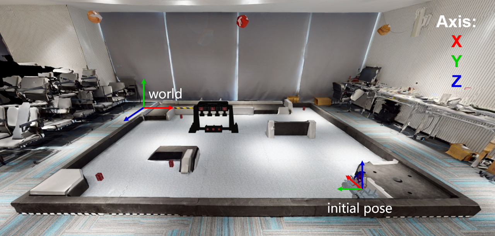

Robomaster EP

The RoboMaster EP is an autonomous vehicle platform equipped with a 4 axis palletizing robot arm and an encircling gripper for flexible gripping action, inspired from DJI's annual RoboMaster robotics competition. It provides Mecanum wheel omnidirectional movement, fast wireless data link system including realtime video stream, and open sdk for further development and programming.
In order to match the theme of the course, we equip the RoboMaster EP with an external computing platform (NUC), as well as additional sensors including onboard lidar and RGB-D cameras for the purposes of better perception of the environment.
An external computing platform is also prepared to communicate with EPs through RoboMaster EP SDK. This platform is dedicated to run real applications in both simulated and real environments.
NUC
The specification of the equipped NUC:
| Model | CPU | RAM | SSD |
|---|---|---|---|
| NUC11PAHI7 | i7-1165G7 (2.8GHz, 8 Cores) | 8GB | 256GB |
1. Sensors
The specification for the equipped sensors:
| Type | Model | Parameters |
|---|---|---|
| Lidar | SlamTech Rplidar A2 | Scan Rate: \(10hz\) Sample Rate: \(16Khz\) Distance Range: \([10m, 25m]\) Minimal Operating Range: \(0.2m\) |
| IMU | HiPNUC Hi226 6-axis IMU/VRU | Frequency: \(30hz\) Static Roll and Pitch Errors: \(0.8°\) Static Roll and Pitch Angles Error Bound: \(2.5°\) Bias Error of Gyroscope: \(<10°/h\) Heading Angle Error When Moving (in 6-axis mode): \(<10°\) |
| RGB & Depth Camera | Intel Realsense D435i | Frequency: \(30hz\) Resolution: \(848\times480\) FOV: \(69°\times42°\) |
| Odometer | RoboMaster SDK | Frequency: \(10hz\) |
2. Accurators
| Actuator | Recommend Range |
|---|---|
| chassis velocity control | \(0.1m/s\leq\|v_x\|\leq0.5m/s\) \(0.1m/s\leq\|v_y\|\leq0.5m/s\) \(0.01rad/s\leq\|v_{th}\|\leq0.5rad/s\) |
| chassis position control | \(\|x\| \geq 0.1m\) \(\|y\| \geq 0.1m\) \(\|theta\| \geq 0.1rad\) |
| arm end position control | while \(0.09\leq x \leq 0.18\), should keep \(y\ge 0.08\) while \(x>0.18\), should keep \(y\ge -0.02\) |
| gripper control | \(x=1\) close gripper \(x=0\) open gripper |
3. Environment

The real environment are shown as above, along with the reference systems of the world and the EP.
The relative position of initial position of EP in the world reference is \((4.2, 0, 3.5)\).
4. ROS Interfaces
Interation with (simulated) EP is done by ROS topics.
A complete list of subscribed/published rostopics are listed (rostopic list -v):
Published topics:
* /rosout_agg [rosgraph_msgs/Log] 1 publisher
* /rosout [rosgraph_msgs/Log] 7 publishers
* /image_view_rgb/parameter_descriptions [dynamic_reconfigure/ConfigDescription] 1 publisher
* /image_view_depth/parameter_updates [dynamic_reconfigure/Config] 1 publisher
* /image_view_rgb/parameter_updates [dynamic_reconfigure/Config] 1 publisher
* /image_view_depth/output [sensor_msgs/Image] 1 publisher
* /image_view_rgb/output [sensor_msgs/Image] 1 publisher
* /camera/color/image_raw [sensor_msgs/Image] 1 publisher
* /camera/color/camera_info [sensor_msgs/CameraInfo] 1 publisher
* /camera/aligned_depth_to_color/image_raw [sensor_msgs/Image] 1 publisher
* /camera/aligned_depth_to_color/camera_info [sensor_msgs/CameraInfo] 1 publisher
* /pointgoal_with_gps_compass [ros_x_habitat/PointGoalWithGPSCompass] 1 publisher
* /gps [ros_x_habitat/PointGoalWithGPSCompass] 1 publisher
* /imu/data_raw [sensor_msgs/Imu] 1 publisher
* /tf [tf2_msgs/TFMessage] 1 publisher
* /rplidar/scan [sensor_msgs/LaserScan] 1 publisher
* /ep/odom [nav_msgs/Odometry] 1 publisher
* /gripper_state [geometry_msgs/Point] 1 publisher
Subscribed topics:
* /rosout [rosgraph_msgs/Log] 1 subscriber
* /cmd_vel [geometry_msgs/Twist] 1 subscriber
* /arm_gripper [geometry_msgs/Point] 1 subscriber
* /arm_position [geometry_msgs/Pose] 1 subscriber
* /cmd_position [geometry_msgs/Twist] 1 subscriber
Additional topics are used for debugging only:
Published topics:
* /image_view_depth/parameter_descriptions [dynamic_reconfigure/ConfigDescription] 1 publisher
* /image_view_third/parameter_descriptions [dynamic_reconfigure/ConfigDescription] 1 publisher
* /image_view_third/parameter_updates [dynamic_reconfigure/Config] 1 publisher
* /image_view_third/output [sensor_msgs/Image] 1 publisher
* /third_rgb [sensor_msgs/Image] 1 publisher
* /pose/cube_1 [geometry_msgs/Pose] 1 publisher
* /pose/cube_2 [geometry_msgs/Pose] 1 publisher
* /pose/cube_3 [geometry_msgs/Pose] 1 publisher
* /pose/cube_4 [geometry_msgs/Pose] 1 publisher
* /pose/cube_5 [geometry_msgs/Pose] 1 publisher
* /position/target_1 [geometry_msgs/Point] 1 publisher
* /position/target_2 [geometry_msgs/Point] 1 publisher
* /position/target_3 [geometry_msgs/Point] 1 publisher
* /pose/ep_world [geometry_msgs/Pose] 1 publisher
* /judgement/exchange_markers [std_msgs/String] 1 publisher
* /judgement/markers_time [std_msgs/String] 1 publisher
Subscribed topics:
* /camera/aligned_depth_to_color/image_raw [sensor_msgs/Image] 1 subscriber
* /camera/color/image_raw [sensor_msgs/Image] 1 subscriber
* /third_rgb [sensor_msgs/Image] 1 subscriber
* /pointgoal_with_gps_compass [ros_x_habitat/PointGoalWithGPSCompass] 1 subscriber
* /gps/goal [move_base_msgs/MoveBaseActionGoal] 1 subscriber -->
4.1 Sensor Topics
| Name | Type | Description |
|---|---|---|
/ep/odom |
nav_msgs/Odometry |
Odometer data, including robot pose and speed information, are obtained by DJI master control. |
/rplidar/scan |
sensor_msgs/LaserScan |
The two-dimensional lidar scanning data, including scene scanning information, is acquired by lidar because the occlusion range of the robot body includes 270° in front of the robot. |
/imu/data_raw |
sensor_msgs/LaserScan |
IMU sensor data, including rotation, velocity, and acceleration information, are collected by the IMU. |
/camera/color/camera_info |
sensor_msgs/CameraInfo |
RGB color image camera intrinsic parameter information. |
/camera/color/image_raw |
sensor_msgs/Image |
RGB color image data, acquired by Realsense. |
/camera/aligned_depth_to_color/camera_info |
sensor_msgs/CameraInfo |
Depth camera information. |
/camera/aligned_depth_to_color/image_raw |
sensor_msgs/Image |
Depth image data, acquired by Realsense and aligned to RGB color images. |
4.2 Accurator Topics
| Name | Type | Description |
|---|---|---|
/cmd_vel |
geometry_msgs/Twist |
Velocity command for the EP chassis. Recommended ranges: \(0.1m/s\leq\|v_x\|\leq0.35m/s\) \(0.1m/s\leq\|v_y\|\leq0.35m/s\) \(0.1rad/s\leq\|v_{th}\|\leq0.5rad/s\) |
/cmd_position |
geometry_msgs/Twist |
Position command for the EP chassis. Recommended ranges: \(0.1m\leq\|x\|\) \(0.1m\leq\|y\|\) \(0.1rad\leq\|theta\|\) |
/arm_position |
geometry_msgs/Pose |
Position control command for the Robotic arm. Available ranges: \(0.09\leq x \leq 0.18\): \(y\ge 0.08\) \(x>0.18\): \(y\ge -0.02\) |
/arm_gripper |
geometry_msgs/Point |
The commands for gripper. Close: \(x=1\) Open: \(x=0\) |
Examples:
# Move EP forward for 0.1m
rostopic pub -1 /cmd_position geometry_msgs/Twist \
"linear:
x: 0.1
y: 0.0
z: 0.0
angular:
x: 0.0
y: 0.0
z: 0.0"
# Move the end of the robotic arm to x=0.09, y=0.1
rostopic pub -1 /arm_position geometry_msgs/Pose \
"position:
x: 0.09
y: 0.1
z: 0.0
orientation:
x: 0.0
y: 0.0
z: 0.0
w: 0.0"
# the command issued now is tp close the gripper
rostopic pub -1 /arm_gripper geometry_msgs/Point \
"x: 1.0
y: 0.0
z: 0.0"
4.3 Other Topics
| Name | Type | Description |
|---|---|---|
/pose/cube_N |
geometry_msgs/Pose |
The position of the ores. The mineral ore numbered with N start from 1 to 5, e.g. /pose/cube_1 |
/position/target_N |
geometry_msgs/Point |
The position of the exchange stations. The Exchange Station numbered with N, ordering from left to right as 1/2/3.For example, /pose/target_1 corresponds to the place information of the leftmost Exchange Station: |
/judgement/exchange_markers |
std_msgs/String |
The marker digits of the exchange stations in the format of data: "3, 5, 2"For debug only. |
/judgement/markers_time |
std_msgs/String |
The time of placing the mineral ore in the right exchange station, in the format of data: "0, None, 102.366459608078".Defined as: nan: waiting for the client0: client EP robot has moved but the ore is not placed in exchange station[float]: elapsed time of the ore get placed None: hit the exchange station, or the ores are not put in the right exchange station.For debug only. |